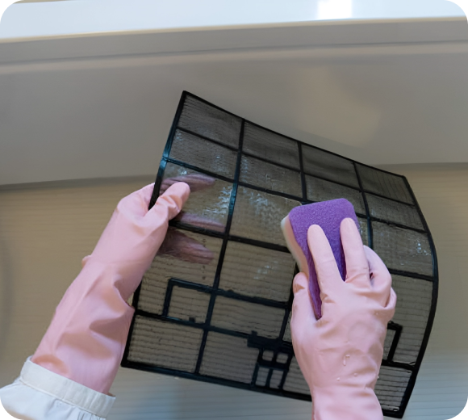
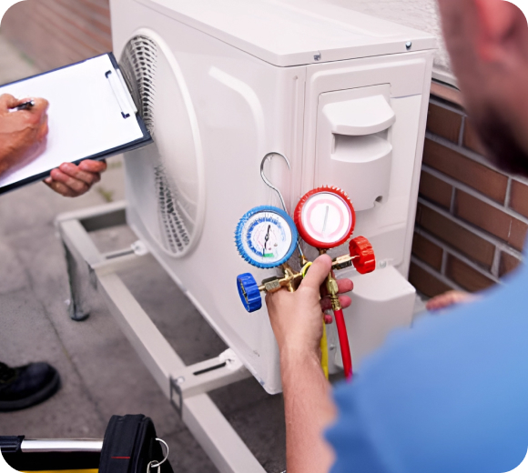
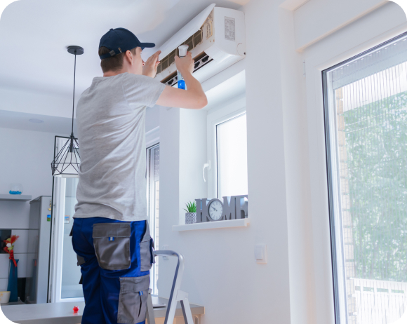
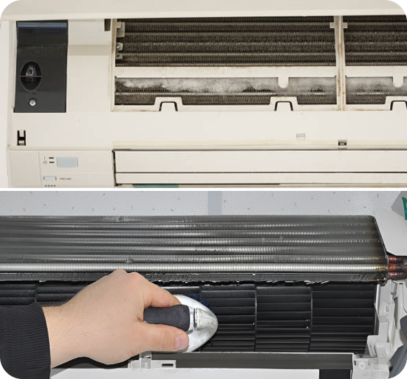

Top 5 Tips for Maintaining Your Home Air Conditioner
As the temperature rises, your home's air conditioner becomes an essential asset for keeping your indoor environment cool and comfortable. However, to ensure that AC unit operates efficiently and lasts for years to come, regular maintenance is key. In this article, we'll discuss five essential tips for maintaining your home air conditioner.
-
Keep the Air
Filters CleanOne of the simplest yet most crucial maintenance tasks for your air conditioner is regularly cleaning or replacing the air filters. Dirty filters restrict airflow, forcing your AC system to work harder and consuming more energy. Aim to clean or replace your filters every 1-2 months during the cooling season
 -
Clear the
Surrounding AreaCheck the area around your outdoor AC unit regularly and remove any debris, such as leaves, branches, or grass clippings. A cluttered outdoor unit obstructs airflow and can lead to reduced efficiency and performance. Additionally, ensure there's at least two feet of clearance around the unit to allow for proper airflow
 -
Schedule Annual
Professional MaintenanceWhile there are tasks you can perform yourself, such as changing filters and clearing debris, it's also essential to schedule annual professional maintenance for your air conditioner. A certified HVAC technician can inspect your system, identify potential issues, and perform necessary repairs or adjustments to keep it running smoothly
 -
Check and Clean
the CoilsOne of the simplest yet most crucial maintenance tasks for your air conditioner is regularly cleaning or replacing the air filters. Dirty filters restrict airflow, forcing your AC system to work harder and consuming more energy. Aim to clean or replace your filters every 1-2 months during the cooling season
 -
Ensure Proper Insulation
and SealingProper insulation and sealing around windows, doors, and ductwork help maintain a consistent indoor temperature and reduce the workload on your air conditioner. Check for any gaps or leaks and seal them with weatherstripping or caulk. Additionally, ensure your home is adequately insulated to minimize heat transfer
As the temperature rises, your home's air conditioner becomes an essential asset for keeping your indoor environment cool and comfortable. However, to ensure that AC unit operates efficiently and lasts for years to come, regular maintenance is key. In this article, we'll discuss five essential tips for maintaining your home air conditioner.